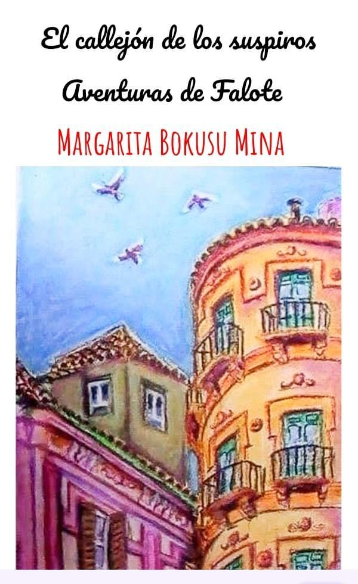
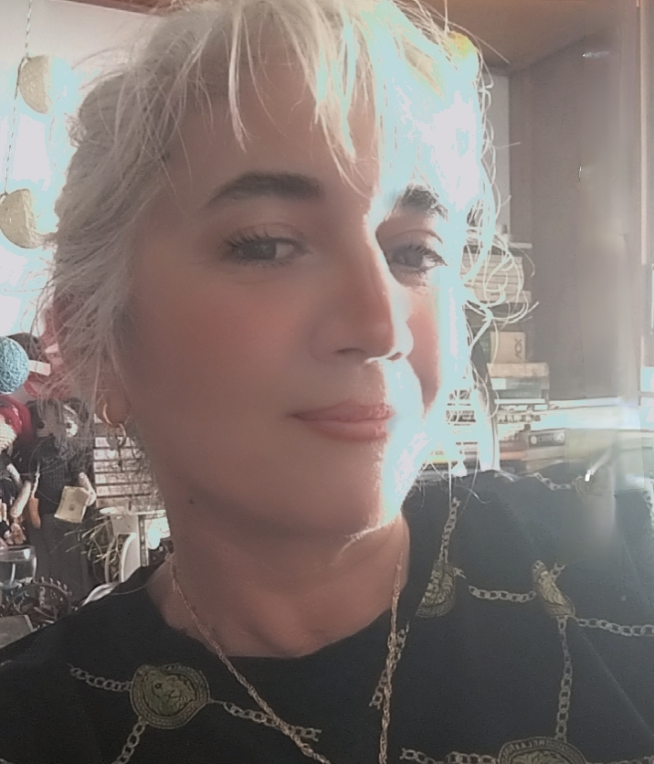

Una crónica sentimental y artÃstica, a tiempo casi real, entre Málaga, Granada y ParÃs.
El callejón de los suspiros. Aventuras de Falote se caracteriza por su originalidad. La obra se plantea como una crónica sentimental y artÃstica, a tiempo casi real, entre Málaga, Granada y ParÃs. Aparecen chats, correos electrónicos y entradas de blog que le dan una textura documental potente y actual.
El arranque, con mensajes y trueque de libros, fija desde el principio el tono y el conflicto —arte, dinero y deseo— y sitúa la obra en la cultura de las redes sociales. La división por capÃtulos ordena la experiencia y permite una lectura cronológica clara que ayuda al lector.
La narradora, Margarita, es consistente, directa y expone vulnerabilidad y criterio. Falote opera como motor dramático y espejo ideológico y erótico, con momentos de lucidez estética y de caos emocional. Cuando toma la palabra, la prosa pasa del diarismo al manifiesto artÃstico, con referencias a galerÃas, debates y figuración.
La ambientación y la atmósfera funcionan bien. El paisaje social se centra en barrios, cafés, talleres y la economÃa frágil de lo creativo. La obra captura la incertidumbre cotidiana y el pulso del circuito cultural independiente.
Un mosaico con fuerza implÃcita y expresiva, coherente con su propuesta documental.
¿Quieres saber más de la obra y de su autora? Margarita cuenta en su blog todo lo ocurrido desde que decidió publicar, y está en todas sus redes.
Ver sus redesUna novela construida a base de chats, correos y blog: la vida del circuito artÃstico independiente contada casi en tiempo real.
Mensajes, correos electrónicos y entradas de blog dan a la obra una textura documental potente y actual, en la cultura de las redes sociales.
Consistente, directa, expone vulnerabilidad y criterio. Su voz pasa del diarismo Ãntimo a la crónica de un mundo precario y creativo.
Espejo ideológico y erótico. Con él la prosa salta al manifiesto artÃstico: galerÃas, debates y figuración, entre la lucidez estética y el caos emocional.
Los temas que sostienen el relato, hilados por la continuidad temporal y por las entradas de recuento de ventas e intercambios:
El estilo y los diálogos son un registro hÃbrido: coloquial, andaluz, con tecnicismos artÃsticos, algo de francés e inglés y sexualidad explÃcita.

MMargarita Bokusu Mina es el seudónimo de esta malagueña que a los 13 años comenzó a escribir diarios, a los 16 cartas y a los 18 inició sus estudios de PsicologÃa para abandonarlos, cuando aún no habÃa cumplido los 20, y marcharse a Londres, donde vivió algo más de dos años, siendo principalmente acomodadora en un teatro y viajando más que nunca. Posteriormente residió en Barcelona nueve meses y actualmente lo hace en AndalucÃa.
En 2003 se licenció en FilologÃa Inglesa y en 2008 comenzó a escribir su primera novela epistolar, que publicarÃa, después de un lustro, con Bubok: «Margarita y el maestro. Una historia de vampir@s, frankosteins y superheroÃnas de barrio». Con esta editorial dio a conocer doce más, la última el verano de 2022.
En primavera de 2023 pensó que era el momento de publicarlas con Amazon. Hasta el momento ha compartido ocho, la mitad también en Kindle Unlimited. Este 2026 también publicó su 14.ª novela en Amazon: «El callejón de los suspiros. Aventuras de Falote».
Después de trabajar muy poco, no por falta de ganas sino de oportunidades, sobre todo como auxiliar administrativa y teleoperadora, en 2014 aprobó unas oposiciones para profesora y desde 2016 es interina.
Si se escribe «Margarita Bokusu Mina» en cualquier buscador, se pueden encontrar sus novelas, leer sus inicios y sus contraportadas —con sinopsis y crÃticas—, además de artÃculos y relatos publicados en más de veinte medios digitales de América y España. También tiene un blog, donde cuenta todo lo ocurrido desde que decidió publicar, y un canal de YouTube.
El callejón de los suspiros. Aventuras de Falote está a la venta en Amazon, su 14.ª novela.
Busca el tÃtulo para entrar en el callejón, entre Málaga, Granada y ParÃs, de la mano de Margarita y Falote.
Buscar en Amazon Aventuras de Falote · 2026Catorce novelas entre Bubok y Amazon, la mitad también en Kindle Unlimited. Búscala por su nombre y asómate a sus inicios y contraportadas.
Ver su obra Margarita Bokusu MinaCatorce tÃtulos entre Bubok y Amazon. Pasa el ratón y haz clic para ver cada portada; los enlaces de compra están en su perfil.
Entre Instagram, su blog y su canal de YouTube cuenta todo lo que ocurre desde que decidió publicar. Pásate a saludarla.
Escribe «Margarita Bokusu Mina» en cualquier buscador y encontrarás sus novelas, su blog, su canal de YouTube y sus perfiles en Facebook, TikTok, Threads y X.